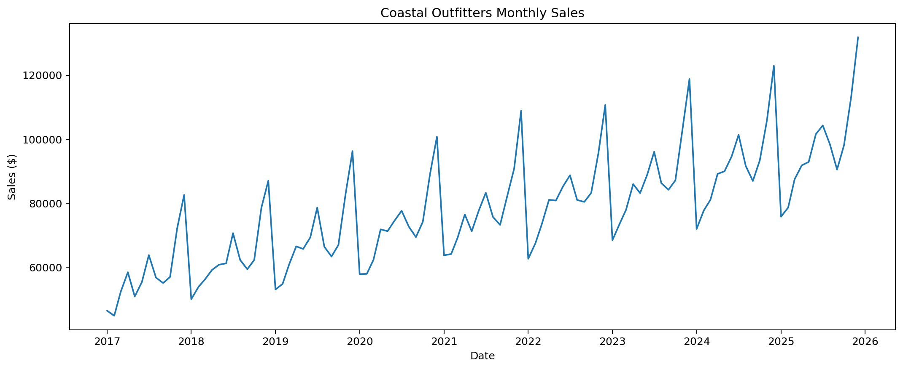
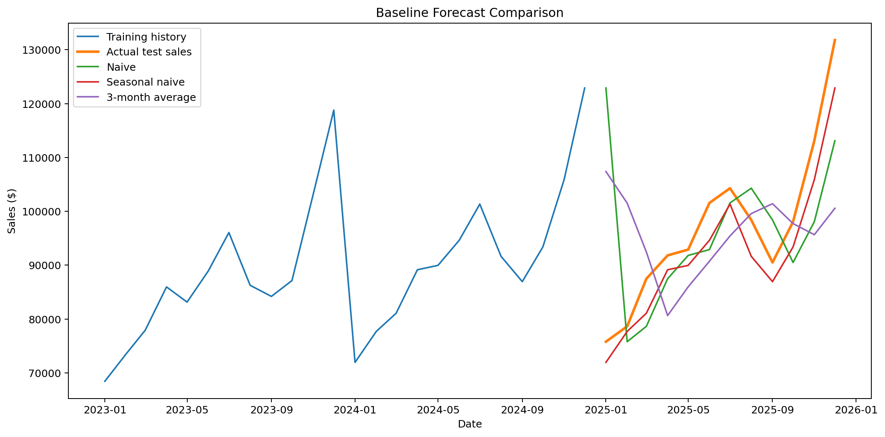
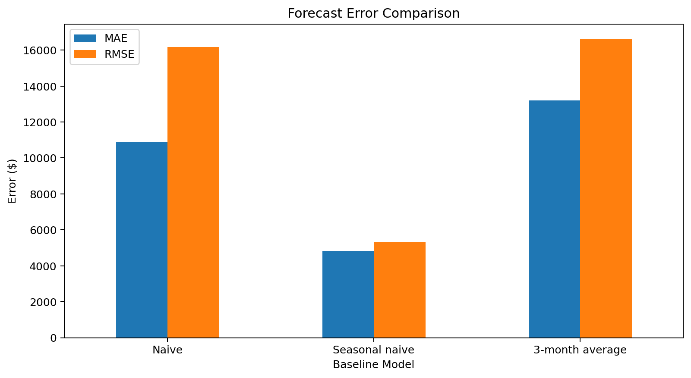
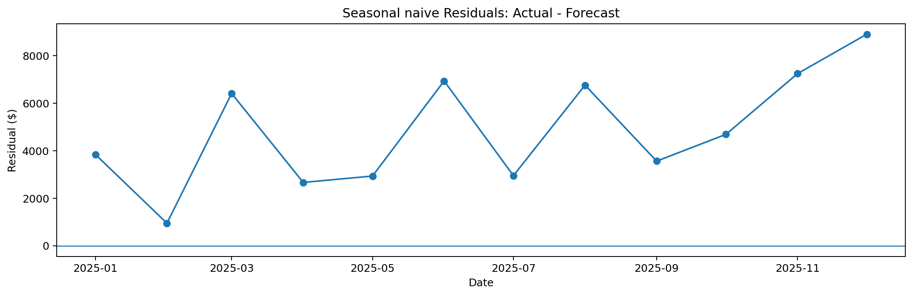

PROJECT 05
Retail Sales Time Series Forecasting
A time series forecasting project comparing simple baseline methods for predicting monthly retail sales and establishing a benchmark before using more complex forecasting models.
OVERVIEW
Project Overview
The objective of this project was to evaluate three simple forecasting approaches and determine which method provided the strongest benchmark for future retail sales forecasting.
Rolling one-month-ahead forecasts were generated for the final 12 months of the dataset and evaluated using multiple error metrics.
DATA
Time Series Dataset
The dataset contains monthly retail sales observations from January 2017 through December 2025.
Total Observations
108
MonthsTraining Period
96
MonthsTest Period
12
MonthsForecast Horizon
1
Month AheadMETHODOLOGY
Chronological Evaluation
The final 12 months were used as the test period instead of randomly selecting observations because time series data must preserve chronological order.
For each test month, only information that would have been available before that month was used to generate the forecast. This prevents future information from leaking into the model.
BASELINES
Forecasting Methods
Predicts the next month using the actual sales value from the immediately previous month.
Predicts each month using sales from the same month one year earlier.
Predicts the next month using the average of the previous three months of actual sales.
RESULTS
Forecast Performance
Seasonal Naive clearly produced the strongest forecasting performance across all three evaluation metrics.
Seasonal Naive MAE
$4,815.83
Best MAESeasonal Naive RMSE
$5,329.12
Forecast ErrorSeasonal Naive MAPE
4.83%
Percentage ErrorMODEL COMPARISON
Comparing the Baselines
Naive
$10,890
MAESeasonal Naive
$4,816
MAE — Best3-Month Average
$13,194
MAEBUSINESS INTERPRETATION
What Does the Best MAE Mean?
The Seasonal Naive forecast differed from actual monthly sales by approximately $4,816 on average during the 12-month test period.
Using the same month from the previous year performed significantly better than relying only on recent monthly sales.
Any more sophisticated forecasting model should outperform the Seasonal Naive baseline before its additional complexity can be justified.
VISUALIZATIONS
Forecast Analysis

Historical Monthly Sales
The time series shows a long-term sales pattern together with recurring seasonal fluctuations.

Forecast Comparison
Seasonal Naive follows the annual peaks and declines more closely than the Naive and 3-month moving-average approaches.

Error Comparison
Seasonal Naive produced substantially lower MAE and RMSE than the other baseline methods.

Seasonal Naive Residuals
Residual analysis shows the difference between actual sales and Seasonal Naive forecasts throughout the test period.
KEY FINDINGS
What the Results Show
It achieved an MAE of $4,815.83 compared with $10,890.42 for Naive and $13,194.31 for the 3-month moving average.
The same month from the previous year provided much more useful forecasting information than simply using the immediately previous month.
Averaging the previous three months reduced short-term variation but made it harder to follow sharp seasonal increases in sales.
A complex forecasting model should only be considered an improvement if it consistently beats this Seasonal Naive benchmark.
LIMITATION
Model Limitation
Seasonal Naive assumes that seasonal patterns repeat from one year to the next. It cannot directly adapt to structural changes, unusual events, promotional effects, or sudden changes in consumer behaviour.
TOOLS
Technologies Used
KEY TAKEAWAYS
What I Learned
Random train-test splits would allow future observations to influence predictions of the past.
Simple forecasting approaches provide a benchmark against which more advanced models can be evaluated.
MAE provides an intuitive dollar interpretation, RMSE penalizes larger forecasting errors, and MAPE expresses error relative to actual sales.
PROJECT RESOURCES
Explore the Full Project
Review the notebook for the complete chronological forecasting workflow, baseline evaluation, residual analysis, and Python implementation.